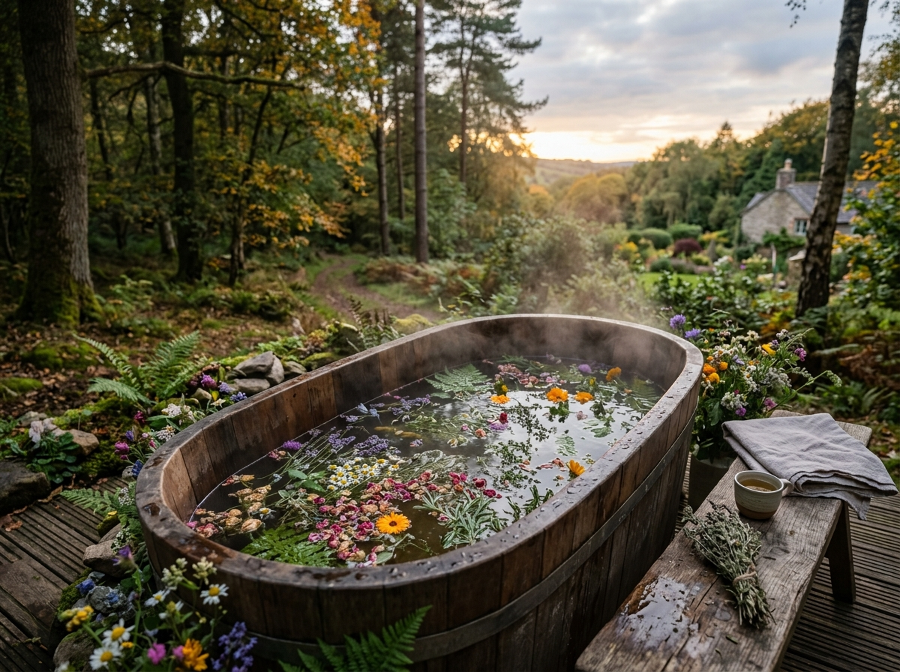
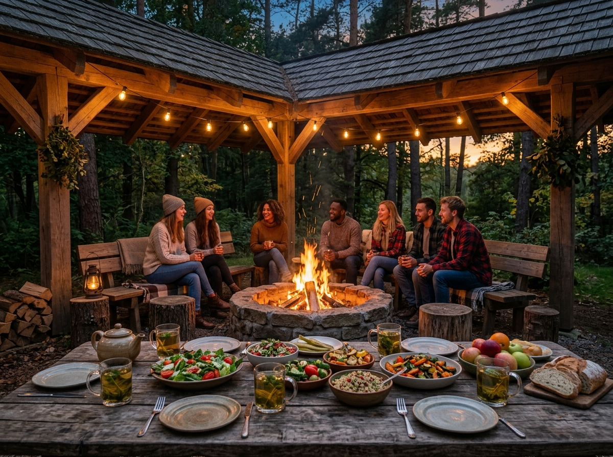

Filary Doświadczeń
Co robimy podczas turnusu?
Wszystkie atrakcje są zaplanowane płynnie w małej grupie rotacyjnej.
 Żywioły
Żywioły
Sauna & Zimna Rzeka
Sesje saunowe połączone z zanurzeniem w zimnej leśnej rzece tuż obok. Potężny reset układu nerwowego i odporności.
- Rytuał saunowy z olejkami
- Zimna kąpiel w rzece
- Rotacja w małych podgrupach (3–4 osoby)
 Ruch & Uważność
Ruch & Uważność
Spacer Uważności & Joga
Poranny 20-minutowy spacer ścieżką leśną do sąsiedniej agroturystyki na profesjonalne zajęcia jogi w naturze.
- Spacer uważności (Mindful Walk)
- Joga w sąsiednim obiekcie
- Medytacja i ćwiczenia oddechowe

Zioła BabciZiołowe Kąpiele Babci
Relaksujące kąpiele w drewnianych baliach z naparami ze świeżych ziół przygotowanymi według receptur Babci.
- Autorskie mieszanki ziołowe Babci
- Regeneracja skóry i mięśni
- Seans wieczorny pod gwiazdami

Rzemiosło & KuchniaStolarka Dziadka & Kuchnia Izy
Warsztaty drewna z Dziadkiem pod wiatą oraz wieczorna biesiada z tradycyjnym kociołkiem Izy i wiejskim chlebem.
- Stolarka & Woodwork z Dziadkiem
- Swojski kociołek i wędliny Izy
- Nocne rozmowy przy ogniu